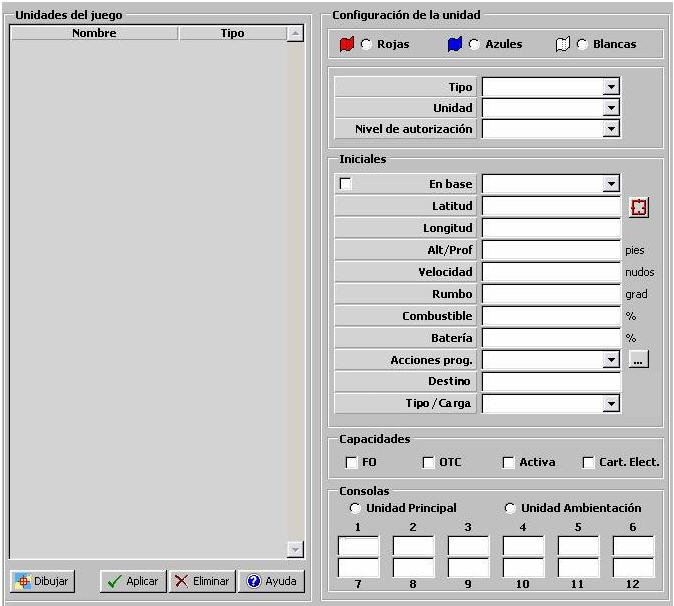

Unidades

Mediante esta tabla se especifican todas las Unidades incluidas en el Ejercicio. Para cada una de estas unidades se indica el bando al que pertenece, sus datos iniciales, sus capacidades y las consolas que se le asignan.
Rojo / Azul / Blanco: Bando al que pertenece la Unidad.
Tipo de Unidad: Puede tomar los siguientes valores:
Unidad: Nombre de la Unidad incluida en el Ejercicio. Al desplegar este campo se le mostrará al operador la lista completa de unidades del tipo seleccionado disponibles en la BD de forma que pueda seleccionar un aún no incluida, para añadirla al Ejercicio.
Nivel de Autorización: Este parámetro determina el nivel de acceso a datos clasificados para esta unidad en el Ejercicio. Afecta a los modelos de ESM, ECM y COMSM de la unidad, de modo que sólo mostrarán datos de aquellos equipos detectados cuya clasificación sea inferior al Nivel de Autorización asignado. Puede tomar los siguientes valores:
Datos iniciales:
En Base: Este parámetro determina si la unidad se encuentra inicialmente en Base. Si es así, se deberá especificar la Base seleccionándola de entre las unidades tipo Base incluidas en el Ejercicio, o bien de aquellas unidades cuya plataforma tenga capacidad de portar una unidad del tipo de la que estamos incluyendo en el Ejercicio.
Posición: Este parámetro determina la posición inicial de la unidad. Sólo podrá ser introducido si la unidad no está inicialmente en Base. Pulsando en el botón Hook, a la derecha de estos campos, se obtiene la posición del Hook en el Escenario. Cuando esta unidad es movida sobre el Escenario, estos campos se actualizan automáticamente con la nueva posición.
Latitud: Latitud de la posición del falso eco.
Unidades: grados y minutos con dos decimales, con formato: 999º99.99'N/S
Rango: 000º00.00'N – 089º59.99'N, 000º00.00'S – 089º59.99'S
Longitud: Latitud de la posición del falso eco.
Unidades: grados y minutos con dos decimales, con formato: 999º99.99'N/S
Rango: 000º00.00'E – 179º59.99'E, 000º00.00'W – 179º59.99'W
Velocidad: Este parámetro determina la velocidad inicial de la unidad. Sólo podrá ser introducido si la unidad no está inicialmente en Base.
Unidades: nudos
Rango: 0 - 9999
Rumbo: Este parámetro determina el rumbo inicial de la unidad. Sólo podrá ser introducido si la unidad no está inicialmente en Base.
Unidades: grados
Rango: 0 - 359
Altura / Profundidad: Este parámetro determina la altura inicial de la unidad.
Para aviones, helicópteros y submarinos que no estén inicialmente en base, este parámetro es introducido por el operador.
Para unidades terrestres y bases que no estén inicialmente en base, este parámetro es siempre la altura proporcionada por la cartografía a partir de la posición de la unidad, y por tanto no es editable. Pulsando en el botón Hook, a la derecha de los campos de Posición, se obtiene la altura del Hook en el Escenario. Cuando esta unidad es movida sobre el Escenario, este campo se actualiza automáticamente con la nueva altura.
Para las unidades de superficie que no estén inicialmente en base, este parámetro es siempre 0 (nivel del mar), y por tanto no es editable.
Cuando se valida el registro se comprueba que el valor de altura / profundidad es adecuado según el tipo de unidad, para que no se produzca inicialmente colisión de la unidad.
Unidades: pies
Rango: 0 - 99999
Combustible: Este parámetro determina la cantidad de combustible inicial de la unidad, como un tanto por ciento sobre la capacidad de combustible de la plataforma. Si la unidad es de tipo aérea el tanto por ciento de combustible inicial introducido se aplica a la capacidad total de la plataforma más la Configuración de Armas Aéreas por defecto (primera asignada de las cinco posibles) de la unidad (ver Preparación de Unidades). En este caso, la cantidad de combustible inicial, obtenida con el tanto por ciento introducido, mas el peso de las armas de la Configuración de Armas Aéreas por defecto, no podrá superar la Carga Máxima Soportada de la de la unidad (ver Plataformas - Aviones / Helicópteros).
Unidades: %
Rango: 0 - 100
Batería: Este parámetro determina la cantidad de batería inicial de la unidad. Sólo podrá ser introducido si la unidad es tipo Submarino.
Unidades: %
Rango: 0 - 100
Acciones Programadas: Programación de Acciones asignada a la unidad. Ver apartado Modelos Básicos - Programación de Acciones - Programación.
Destino: Campo alfanumérico que describe el lugar de destino de la unidad. Sólo es aplicable a unidades de superficie y submarinas.
Tipo/Carga: Campo alfanumérico que describe el tipo de carga que trasporta la unidad. Sólo es aplicable a unidades de superficie y submarinas.
Capacidades:
FO: Determina si la unidad tiene capacidad de enviar Force Order durante el Ejercicio.
OTC: Determina si la unidad actúa como OTC en el Ejercicio. Se introduce a efectos de identificarla como OTC pero no influye en los modelos.
Activa: Determina si la unidad está Activa desde el inicio del Ejercicio. En caso contrario la unidad no será simulada hasta que el instructor la active en durante el Ejercicio.
Cartografía Electrónica: Determina si la unidad dispone de sistema de presentación de Cartografía Electrónica Digital, en cuyo caso, en la Presentación Táctica de las Consolas de Alumno asignadas a dicha unidad se presentarán las cartas electrónicas incluidas en el Escenario del Ejercicio (ver Manual de Preparación – Preparación de Escenarios – Edición de Escenarios y Manual de Alumno – Consola Táctica – Pantalla Táctica). En caso contrario, en la Presentación Táctica de estas Consolas de Alumnos, se limitará la visión cartográfica a la línea de costa dentro del alcance de los sensores Radar de los que disponga la unidad.
Consolas:
Unidad Principal / Ambientación: Este parámetro determina si la unidad es Principal o unidad de Ambientación.
Consolas 1 - 12: Consolas asignadas a la unidad.